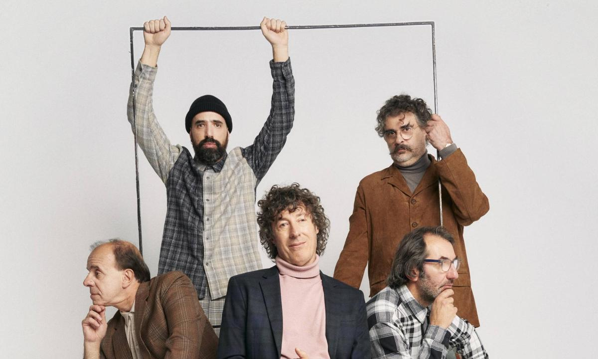

El cuarteto de nos

Biografia

El Cuarteto de Nos es una banda de rock uruguaya formada en Montevideo en 1980.1 Está integrada por el
cantante y guitarrista Roberto Musso, el bajista y corista Santiago Tavella, el baterista Álvaro Pintos,
el guitarrista y corista Gustavo Antuña y el tecladista Santiago Marrero.
Hicieron su debut en el
año 1984 con el lanzamiento del álbum split Alberto Wolf / El Cuarteto de Nos, en colaboración con el
músico uruguayo Alberto Wolf. A partir de 1987 comenzaron a realizar su primer álbum en solitario Soy
una arveja, donde el ambiente se centra en una ciudad imaginaria llamada Tajo —ciudad creada por los
hermanos Roberto y Ricardo Musso—. Un año después lanzaron Emilio García (1988), en donde parte desde la
misma estructura que su antecesor. En 1991 salió a la venta Canciones del corazón, último disco lanzado
bajo la discográfica Orfeo. Después de varios desacuerdos con el sello deciden afiliarse con Ayuí /
Tacuabé, y en 1994 salió al mercado Otra Navidad en las Trincheras, en donde obtuvo éxito tanto en su
país de origen como en occidente, logrando llegar a las 6 000 copias y ser certificado platino y oro. Un
año después Barranca abajo (1995) fue lanzado en donde el disco mantiene un hilo conceptual sobre la
vida de un personaje ficticio creado por la banda llamado José Barrancas; sin embargo, no logró obtener
tanto reconocimiento como su antecesora.
ALBUMES